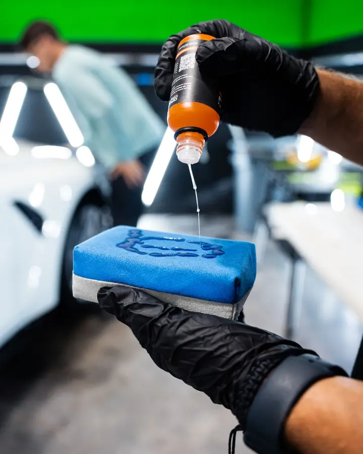
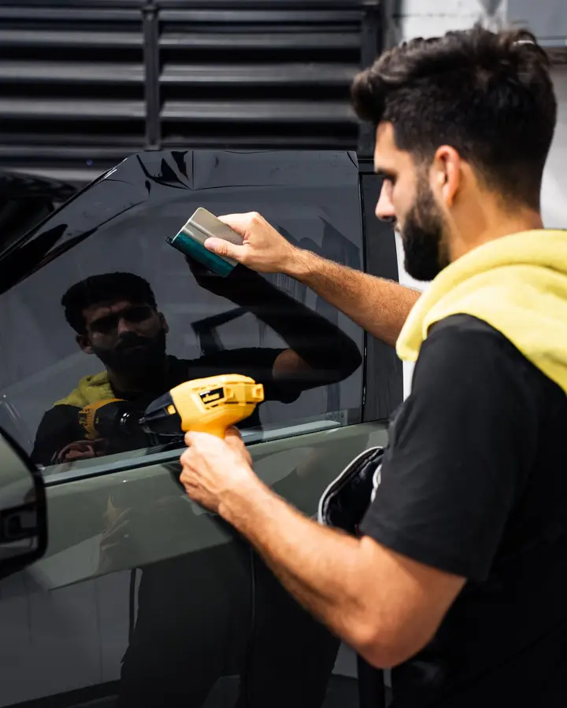
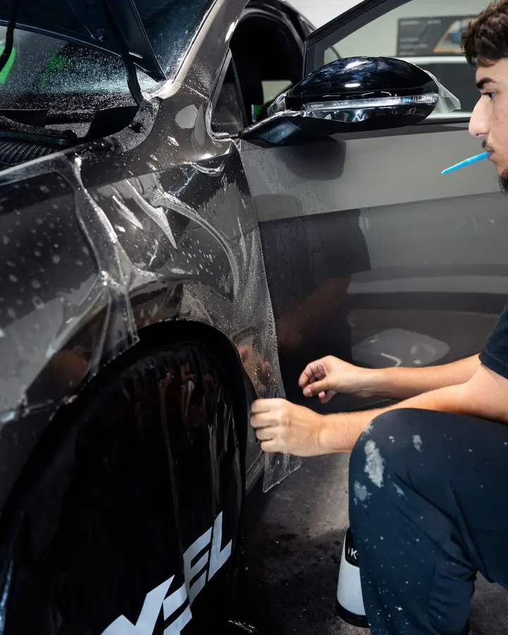
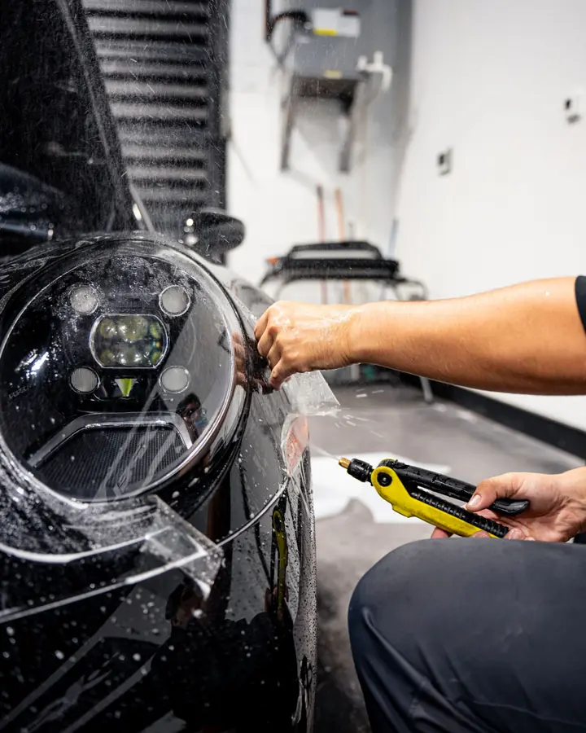
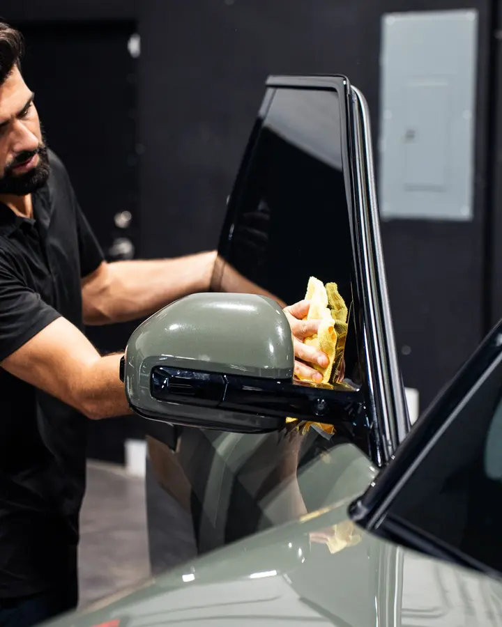
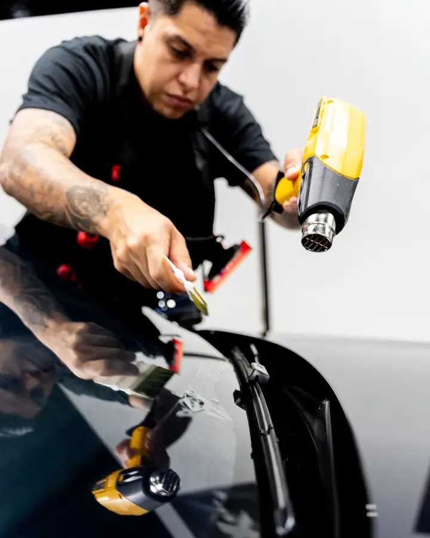
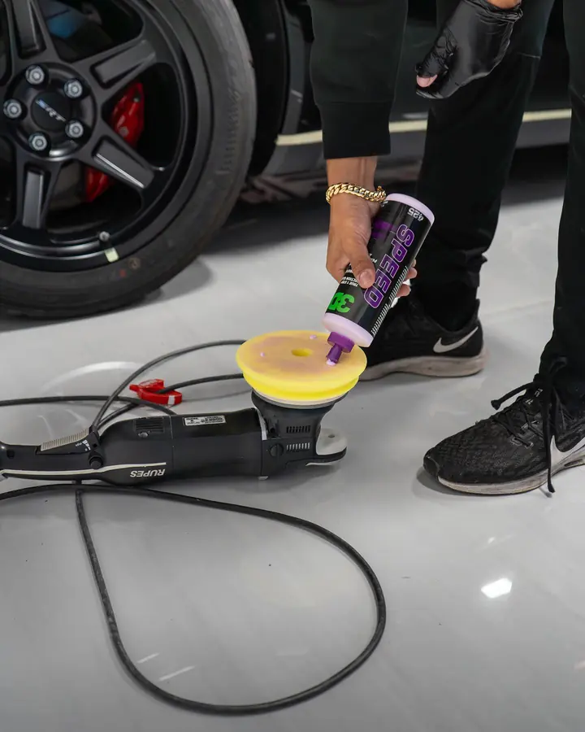
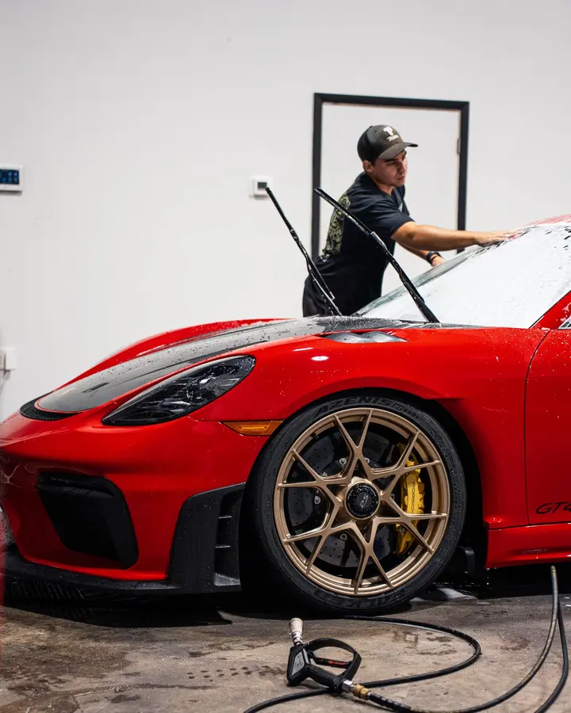
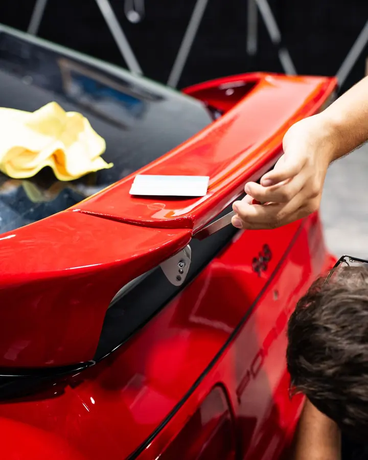
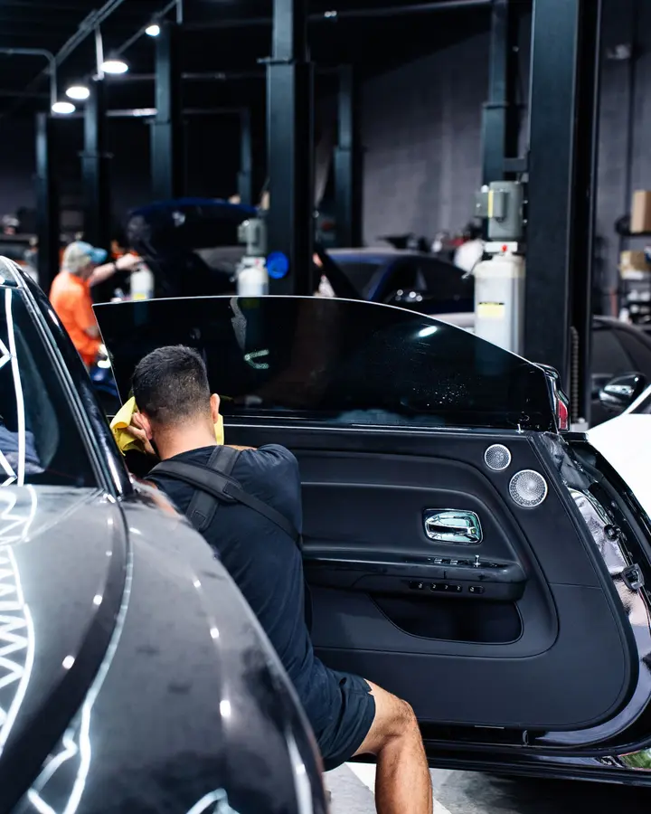

Ceramic Coating vs. Wax: What Is the Difference?
A plain-language look at durability, gloss and upkeep, and which one fits your car.
Read moreCar care tips and answers from the team at Divine Detailers.

A plain-language look at durability, gloss and upkeep, and which one fits your car.
Read more
How ceramic tint cuts heat and UV, and how to choose the right shade.
Read more
Gloss and matte paint protection films are two distinct styling options. Before scheduling PPF installation, consider which finish fits your style and vehicle.
Read more
What clear bra film is made of, what it protects against, and who benefits most.
Read more
What VLT means, the darkness levels commonly cited for Florida, and how to stay legal.
Read more
The main kinds of tint film, what each does well, and how to choose.
Read moreSimple washing habits that keep a coating slick, glossy and working for years.
Read more
Why paint gets those spider-web scratches in the sun, and what actually fixes them.
Read more
What each level of correction does, and how to know which your paint needs.
Read moreThe everyday South Florida threats to your car's finish, and how to defend against them.
Read moreColor, cost drivers, reversibility and care: the real differences between a wrap and paint.
Read more
A simple schedule for washing, interior detailing and exterior protection in South Florida.
Read more
They protect in different ways. Here is how to choose, or how to combine them.
Read more
What is normal, what to avoid, and how to clean your tint without damaging it.
Read moreReach out and let’s talk about what your car needs next.
Contact us